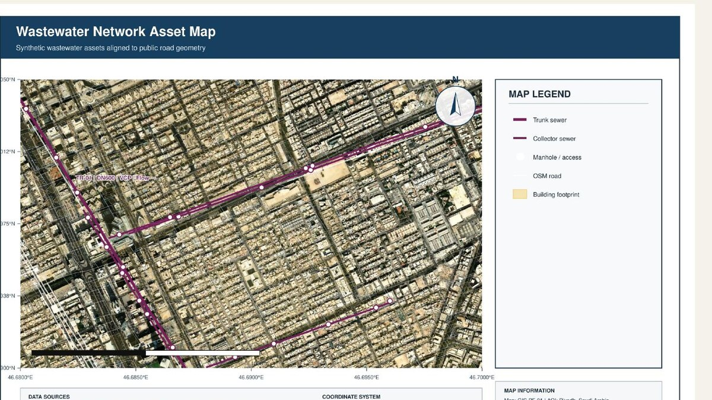
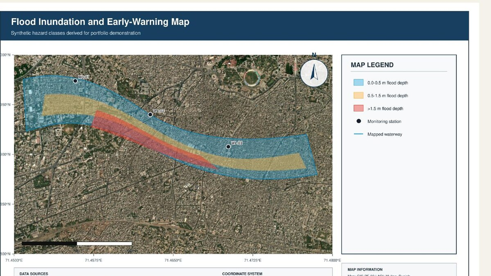
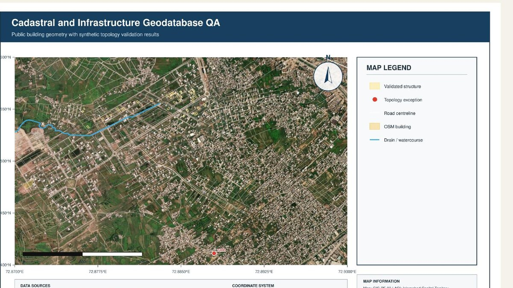
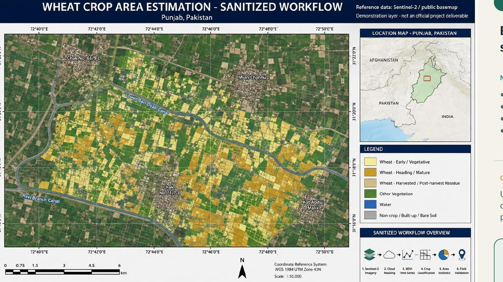
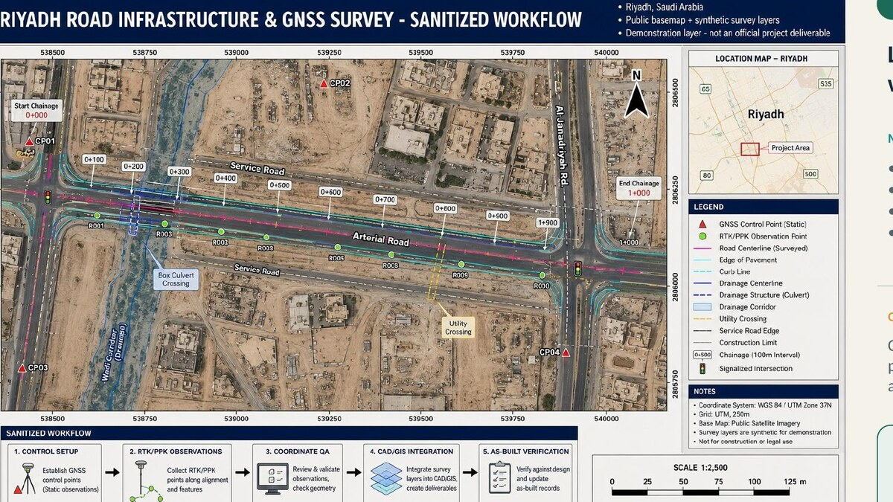
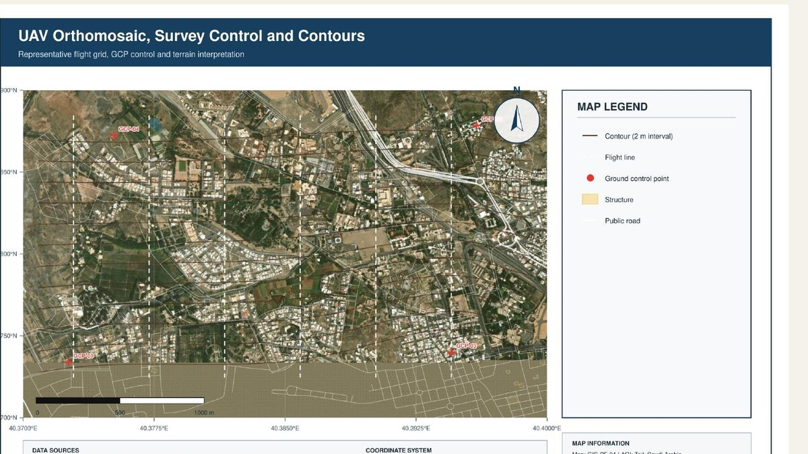

Available for Data Science, AI/ML, Python, GIS and GeoAI opportunities
PYTHON · DATA SCIENCE · AI/ML · GEOAI · SPATIAL INTELLIGENCE
Turning complex data into operational intelligence.
I build end-to-end Python, data-science, machine-learning and GeoAI solutions that connect structured data, satellite imagery, AI models, APIs and decision-makers across healthcare, infrastructure, utilities, disaster management and agriculture.
Based in PakistanOpen to GCC & global rolesMSc GIS

01ObserveEarth observation
02PredictGeoAI models
VERIFIED PUBLIC ACTIVITY
GitHub footprint
Live public metrics from GitHub—not manually entered portfolio claims.
—FollowersView follower identities ↗
—Public repositoriesExplore source projects ↗
—Repository starsAcross public repositories
—Latest public updateConnecting to GitHub…
GitHub does not disclose who viewed a profile. Anonymous profile-view totals are available on the GitHub README; follower identities remain visible through the Followers page.
ABOUT
Geospatial depth.
AI-forward thinking.
I am an MSc GIS professional and Python data/AI practitioner with 10+ years of experience building spatial databases, analytical workflows, machine-learning solutions, maps and enterprise systems for infrastructure, utilities, agriculture, disaster risk, land administration and environmental projects.
My work extends traditional GIS into Data Science, Data Engineering, machine learning, deep learning, RAG and LLM applications, API deployment, GeoAI, remote-sensing automation, BIM–GIS integration and Digital Twins—with one principle: technology must improve real decisions.
Python • NumPy • Pandas • scikit-learn • TensorFlow/Keras • LangChain/RAG • FastAPI/Flask • SQL/PostgreSQL • ArcGIS/QGIS • GEE • FME • Power BI • GeoAI
CAPABILITIES
One connected spatial stack.
From raw observations to secure, usable decision-support systems.
⌖
Enterprise GIS
ArcGIS Enterprise, geodatabases, governance, topology, field mobility and operational dashboards.
Spatial systems that scale◉
Remote Sensing
Sentinel, Landsat, SAR, LiDAR, change detection, crop intelligence and Google Earth Engine.
Observe change objectively✦
Data Science, AI & GeoAI
NumPy, Pandas, scikit-learn, TensorFlow, predictive analytics, time-series forecasting, RAG, LLM APIs and workflow automation.
Predict what matters next⬡
UAV Intelligence
Mission planning, GCPs, RTK/PPK, photogrammetry, orthomosaics, DEMs and 3D reconstruction.
Precision from the air▱
BIM & Digital Twin
CAD/BIM/IFC-to-GIS integration, asset context, MEP intelligence and spatial digital twins.
Connect design and reality↗
Data Engineering & Deployment
ETL, SQL, PostgreSQL, REST APIs, Flask, FastAPI, Streamlit, Web GIS, Power BI and production-oriented decision support.
Move models into actionTECHNOLOGY ECOSYSTEM
Platforms, engineering tools and libraries.
Verified capabilities spanning analytical modelling, production delivery and spatial intelligence.
Analytics and intelligent models
PythonNumPyPandasJupyterMatplotlibSeabornscikit-learnTensorFlowKerasRNN / LSTM / GRUHugging FaceLangChainRAGOpenCV
Reliable data-to-application delivery
SQLPostgreSQLSQLiteSingleStoreETLREST APIsBeautifulSoupSeleniumFastAPIFlaskStreamlitGradioGit / GitHubDockerAWSAzureGoogle Cloud
Enterprise and imagery intelligence
ArcGIS ProArcGIS EnterpriseQGISERDAS IMAGINEGoogle Earth EnginePostGISFMESentinelLandsatSARLiDARGNSS / RTK / PPK
Survey, engineering and digital twins
Agisoft MetashapeUAV PhotogrammetryOrthomosaicsDEM / 3DAutoCADCivil 3DBIMIFCBIM-to-GISCAD-to-GISPower BI
Programmatic spatial workflows
ArcPyGeoPandasGDALRasterioShapelyFionaPyProjFoliumLeafletGeoJSON
LIVE & GITHUB PROJECTS
Projects built around real outcomes.
Public systems, source repositories and continuing technical work—open for exploration.
PK
35 DISTRICTS SCREENED
LIVE · UPDATED 10 AUG 2026 · GIS + GEOAI
Pakistan National Flood Intelligence System
An operational decision-support dashboard combining NDMA impacts, FFD river flows, reservoir storage, rainfall, interactive maps and GeoAI scenario planning for national flood preparedness and response.
- Official 10 August national impact statistics
- Provincial impact and infrastructure infographics
- River-flow, reservoir and rainfall analytics
- 35 district risk and action profiles
- Five planning and recovery scenarios
01 · PROPTECH / DIGITAL TWINLive
Planora AI — AI CAD, BIM & GIS Flow
A built-environment intelligence platform connecting AI-assisted design, CAD/BIM, GIS, MEP, 3D visualization, Cesium, MapLibre, Supabase and digital-twin workflows.
ReactThree.jsCesiumGeoAIBIM–GIS
02 · LIVE PYTHON / AI LAB4 Projects
Healthcare Machine Learning & RNN Analytics
Four verified projects covering heart-disease ML, USA hospital intelligence, healthcare stock RNN forecasting and FDA AI-device authorization forecasting.
Pythonscikit-learnTensorFlowLSTMClustering
03 · GENERATIVE AI / RAGLive
LangChain RAG Document Assistant
A live document-intelligence workspace with PDF/TXT/Markdown ingestion, overlapping chunks, retrieval ranking, grounded answers, source citations, relevance scores and a transparent RAG pipeline.
LangChainRAGSingleStoreVector SearchSource Citations
04 · OCR / ENGINEERING INTELLIGENCE2 Live Apps
MEP Scanner System & HIS Bill Scanner
Two production-facing OCR workspaces: a multilingual MEP drawing-intelligence system with structured engineering QA, and a responsive receipt and invoice scanner with editable bill extraction.
OCRPDF IntelligenceMEP ParsingData QA
05 · API / DASHBOARDSLive
Prediction APIs & Interactive Dashboards
A live multi-model prediction workspace with distinct healthcare risk, hospital capacity, healthcare stock and FDA device forecasting workflows, instant outputs and transparent model explanations.
Pythonscikit-learnTensorFlowFastAPIInteractive UI
06 · AI CAREER PLATFORMLive
SMHIS Resume — AI Career & Resume Platform
A live professional platform supporting career presentation, resume services and digital professional branding for job seekers and organizations.
Career TechResume ServicesProfessional BrandingWeb Platform
Open live website ↗07 · AGENTIC AI / GEOAI PLATFORMLive
HIS AI Solutions — Agentic AI Agency Platform
A live AI solutions platform showcasing autonomous agent workflows, AI engineering, analytics, consulting, GeoAI, Python automation and multi-cloud capabilities for business, engineering, healthcare and other industries.
Agentic AIAI AgentsGeoAIPythonMulti-Cloud
08 · GEOAI / SPATIAL RESILIENCE5 Live Tools
GeoAI Resilience Intelligence Suite
A unified operational workspace for urban-growth suitability, flood-response prioritization, utility-network risk, stormwater capacity and remote-sensing change assessment.
GeoAISpatial MCDAUtilitiesDisaster RiskRemote Sensing
PROFESSIONAL GEOAI CARTOGRAPHY
Five analytical systems. One traceable GIS evidence standard.
These exact program-specific map layouts appear in the research repository and inside both ArcGIS Pro-style and QGIS-style workbenches. Every composition preserves thematic layers, coordinates, CRS, scale, north arrow, legend, sources, date, metrics and its sample-data boundary.

01 · URBAN INTELLIGENCE
Urban Growth Suitability
Weighted spatial MCDA for accessibility, terrain, flood risk, land use and protected-area constraints.

02 · FLOOD INTELLIGENCE
Flood Hazard & Exposure
Hazard classes, rivers, exposed settlements, access routes and response priorities.

03 · UTILITY GUARDIAN
Utility Network Criticality
Network topology, asset condition, service consequence and inspection priorities.

04 · DRAINAGE LAB
Drainage Capacity & Surcharge
Catchments, flow paths, nodes, design-storm runoff and hydraulic capacity gaps.

05 · EARTH CHANGE AI
Bi-temporal Land-cover Change
2019–2026 comparison, built-up gain, vegetation loss, confidence and human QA.
Evidence note: Reproducible portfolio-grade analytical samples—not authoritative agency observations or calibrated engineering results.
PROFESSIONAL CASE STUDIES
Selected delivery experience across utilities, disasters, land, agriculture and the environment.

NWC Wastewater Network GIS
Spatial data structuring, mapping and quality-controlled network intelligence supporting utility operations.
Enterprise GISUtilitiesData QA

PDMA Punjab Flood Decision Support
Flood exposure, evacuation access and early-warning mapping focused on the Chenab and Sutlej systems.
Risk mappingRemote sensingDRR

FGEHA Enterprise Geodatabase
CAD-to-GIS conversion, cadastral topology and infrastructure databases for Islamabad housing sectors.
CadastreTopologyArcGIS

Crop & Wheat Intelligence
Satellite-based crop monitoring, estimation and predictive spatial analytics for agricultural decisions.
GEESentinelGeoAI

Integrated Spatial Systems
Web GIS, field data, enterprise databases and dashboards connecting complex infrastructure information.
Web GISEnterpriseAutomation

Mining Site Spatial Assessment
Environmental and geospatial screening supporting site understanding and evidence-based selection.
SuitabilityEnvironmentRS
PROFESSIONAL EXPERIENCE & LIVE DELIVERY
From field GIS to operational AI systems.
A verified career timeline from 2012 to the present, connected to selected public demonstrations and active engineering projects. Live activity below is read from public GitHub repositories; client-sensitive project details remain summarized.
Live project activityConnecting to public GitHub activity…
View complete GitHub profile ↗
Pakistan Flood Intelligence
Public decision-support demonstration connecting hazard indicators, exposure, preparedness and interactive risk communication.
Production demo
MEP Scanner System
MEP document-intelligence demonstration for drawing ingestion, OCR-assisted extraction and structured engineering findings.
Production demo
HIS Bill Scanner
Responsive bill-processing demonstration with camera/file input, OCR review, structured fields and export-ready results.
Production demo
LangChain RAG Assistant
Document ingestion, chunking, retrieval and evidence-grounded question answering presented in a working interactive environment.
Production demo
Prediction Studio
Four model-specific assessment workflows for heart risk, hospital capacity, healthcare stock and FDA device forecasting.
Production demo
GeoAI Resilience Intelligence Suite
Five user-driven spatial workflows for urban planning, flood response, utility risk, stormwater capacity and earth-observation change assessment.
Production demo
Planora AI
AI-assisted CAD, BIM, spatial and building-design workflow concept localized for Pakistan’s architecture and property ecosystem.
Active development
Evidence note: “Live” identifies a publicly accessible demonstration. GitHub timestamps come from public repository metadata. Employer and client work is summarized to protect confidential information; demonstration layers are not presented as official client deliverables.
CAREER TIMELINE · 2012—PRESENT
Progress built through real delivery.
GIS Specialist
Professional Geo Tech Services FZC LLCNWC Riyadh wastewater-network mapping, Riyadh infrastructure/GNSS delivery and Taif mining environmental assessment support across KSA/UAE assignments.
- Utilities & infrastructure GIS
- GNSS / QA-QC
- Environmental spatial analysis
GIS Expert
TerraSense Consulting Pvt. Ltd.GeoAI land-cover analysis, satellite crop intelligence, wheat estimation and predictive analytical workflows.
- Google Earth Engine
- Remote sensing
- Agricultural intelligence
GIS Specialist
FGEHA, IslamabadCAD-to-GIS transformation, topology, cadastral and infrastructure geodatabases for G-14/3, F-14 and G-15, with team training and quality control.
- Enterprise geodatabases
- CAD-to-GIS
- 20+ staff trained
GIS Manager
Kernel Seeds CorporationGeodatabase management, georeferencing, crop analysis and precision-agriculture information supporting operational decisions.
- 5 May 2019—10 Mar 2021
- Agricultural GIS
- Data governance
GIS Manager
PDMA Punjab — PIU, MultanFlood intelligence for Chenab and Sutlej influence areas using river, gauge and forecast information, exposure analysis and emergency situation mapping.
- Observed vs forecast risk
- Exposure & access mapping
- Emergency response support
Junior GIS Professional
The Urban UnitUrban, land, infrastructure and survey-focused GIS delivery for multidisciplinary public-sector planning assignments.
- Urban GIS
- Spatial databases
- Field coordination
GIS Assistant / GIS Associate
The Urban Unit & Loyal ConsultantsCareer foundation in mapping, digitization, field-survey integration, spatial analysis and cartographic production.
- Data capture
- Cartography
- Survey GIS
CREDENTIALS
Continuous learning for a changing profession.
LET’S BUILD SOMETHING USEFUL
Have a spatial challenge?
I am open to Data Science, Data Engineering, AI/ML Engineering, Python development, GIS, GeoAI, enterprise spatial systems and technical leadership opportunities in Pakistan, the GCC and globally.